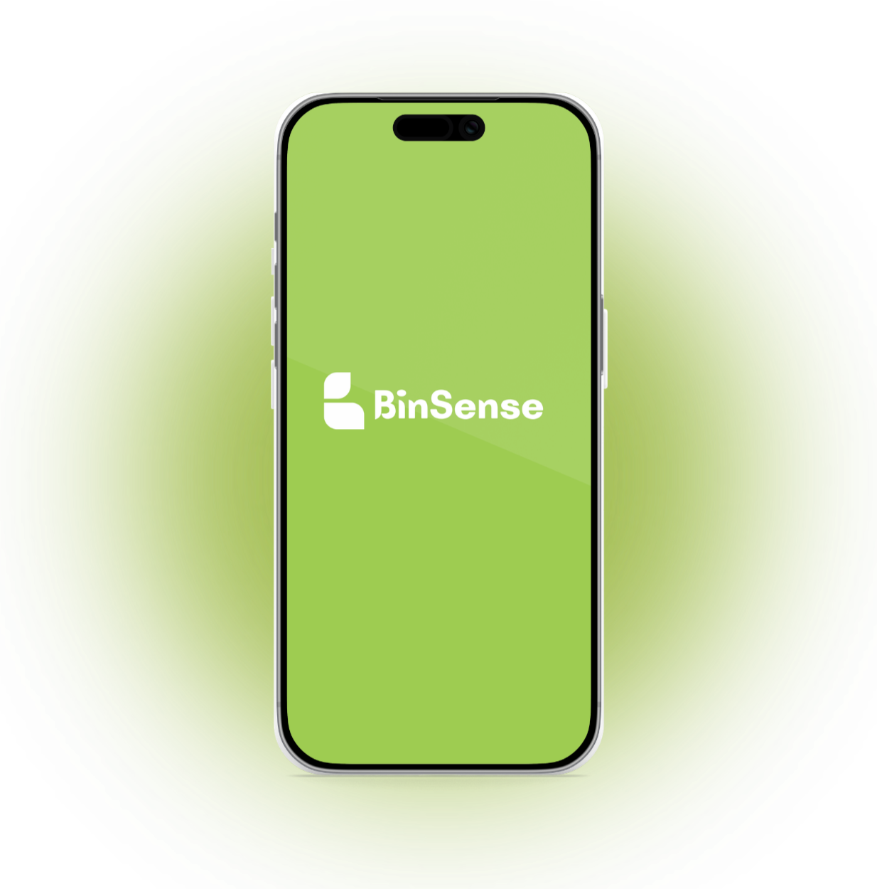

Real-Time Waste Monitoring
Eliminate the guesswork with reliable ultrasonic sensors that provide 24/7 visibility into the fill levels of every bin across the community.
Transforming the future of urban sanitation by integrating advanced sensors and automated monitoring into our daily lives. Our mission is to eliminate waste overflows through transparency and innovation, providing every household in East Bajac-Bajac, Olongapo City with the tools they need to contribute to a greener, healthier, and more sustainable environment.
We bridge the gap between technology and urban sanitation to provide a seamless, reliable, and user-friendly waste management experience.
Eliminate the guesswork with reliable ultrasonic sensors that provide 24/7 visibility into the fill levels of every bin across the community.
Prevent unhygienic littering with "Bin Full" alerts sent directly to the dashboard before waste reaches the limit.
Monitor your weekly trends with an easy-to-read "Waste Overview" chart, allowing you to track fullness levels from Monday to Sunday at a glance.
Empower residents to report issues, suggest improvements, and rate their experience to ensure the platform evolves with the community's needs.
Traditional waste management often leaves bins overflowing and communities underserved. BinSense solves this by providing the transparency needed to prevent littering, reduce health risks, and ensure that our streets remain a source of pride for the people of East Bajac-Bajac, Olongapo City.
